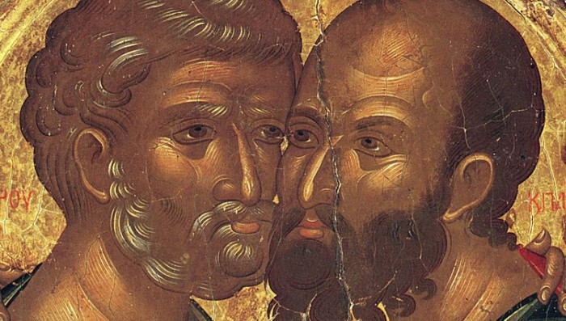

The Two Shall Be One. Israel and the Church
Part of the tree renounced the trunk that bears it and proclaimed itself the whole…
Read also "Israel and the Church: Two Halves of One Heart", a view from the other side.
On the lid of the Ark there were also two, the cherubim, facing one another. To look closely at the other, to see and understand oneself in him, is the only way to know God and oneself. For now the world is "hooked" on the mirror like a drug: from self-absorption to the frenzied destruction of whatever it does not understand. (Olga Medvedeva)
To this day the voice of Paul, who ordained in all the churches (1 Cor. 7:17) that each one (Jews and Greeks) should remain in his own calling, remains unheard.
Once it had grown strong, the Community of believers from the nations rejected its brothers, the Community of the saved from Israel. Part of the tree renounced the trunk that bears it, and the other branches. A part proclaimed itself the whole.
I would like to show my understanding of Paul's revelation about Israel and the Church through the principle of two who make up one indivisible whole.
The creation of Adam and Chavah (Eve) is the greatest mystery of God's creation, sealed up until its time. Revealed to Paul, this mystery hidden from former generations has still not become a revelation for the whole community of Jewish and Greek believers, for some two thousand years now.
The Bible speaks here not only of Adam's family but also of the people of God, about whom the Eternal One purposed from the beginning: the two shall be one. Not only Israel, whom the Most High chose, but also people from all the nations who call on the name of the Lord, Jews and Greeks, according to God's plan, the two must become one. The Community of God from the circumcision and the Community of God from the uncircumcision, EACH fulfilling ITS OWN CALLING, must make up the one Body of the Messiah.
So at the very beginning God creates Adam, then, putting him to sleep, separates a part from him and makes Chavah (Eve). What is interesting here is that God did not use another piece of clay, from another deposit, of another composition and colour. The Creator takes the whole man, of whom He said "very good", separates a part from him and makes Chavah from it. So now two of the human race stand before Him. Then God gives these two the command to become one whole ("and they shall be one flesh", Gen. 2:24).
The ways of the Lord are past finding out. One would think: rejoice in one whole, perfect man. But He divides him in two, giving them in turn the task of becoming one whole again.
Probably what is meant here is a unity of a different level, in which the parts of the whole exist inseparably and unconfusedly. After all, both Adam and Chavah were created by the Most High without their consent. When God commands them to become one, their consent and the expression of their free will are now required. For it is they who must go through the process of mutual adjustment and deep change in order to become one whole.
First He separates them, to give them the chance to become aware of themselves as individuals. And only then, through the expression of their free will, through renouncing their ego, do they become one indivisible whole, one flesh. A small remark is needed here: in becoming one flesh neither Adam nor Chavah loses their distinctive features and functions; that is, Adam does not turn into a woman, nor does Chavah become mannish.

Of course, there can be no literal parallels here, but the calling of Israel and of the Church from the nations is very reminiscent of the Creator's making of the first people and the commandment given to them from the beginning: the two shall be one. Having chosen Israel as His people, at a certain stage the Most High, as it were, brings forth from it, sets apart for Himself, the Church from the nations as well, redeeming both by the perfect sacrifice of His Son and making them FELLOW heirs of God's promises.
He sets apart the Church from the nations through Peter and Paul, commanding Israel and the Church, the two communities of God, to remain what they are called to be (1 Cor. 7:17–18…) and at the same time to become one Body reaching fullness and perfection.
If we look closely, we notice an interesting detail: wherever Paul speaks of the revelation of inseparable and unconfused unity, in the same breath he also speaks of family relationships, and explains his thought by the image of the human body, made up of different members living in unity and harmony with one another.
Born in the bosom of Israel and set apart from it, the Church begins to understand itself. So too does the firstfruits of Israel that received the Messiah (the firstfruits of Israel is the pledge of the salvation of the whole people, as it is written: "All Israel shall be saved", Rom. 11:26). At the very beginning there is a short period of passionate love between the Community of the circumcision and the Community of the uncircumcision. Then they quarrel and argue, to the point of rejection and "divorce".
But God's plan, TWO THAT MAKE UP ONE, will one day be fulfilled.
See also the video on this theme:
Author: Ephraim Kalish
Read also: "Let Each Remain in His Calling"
The full theme "Two Olive Trees. Israel and the Church":